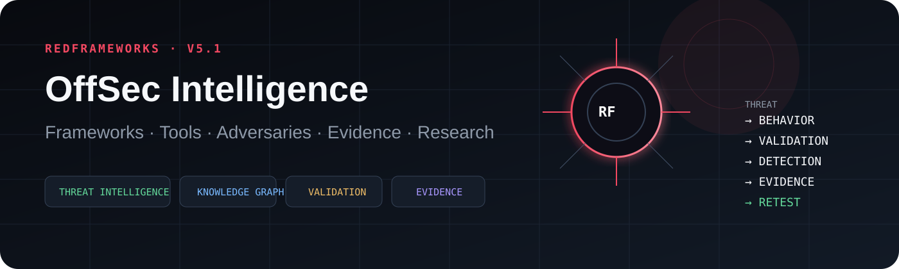
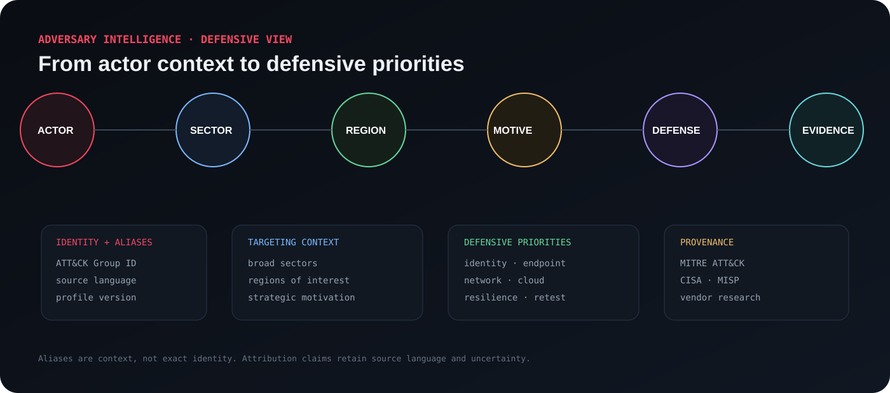
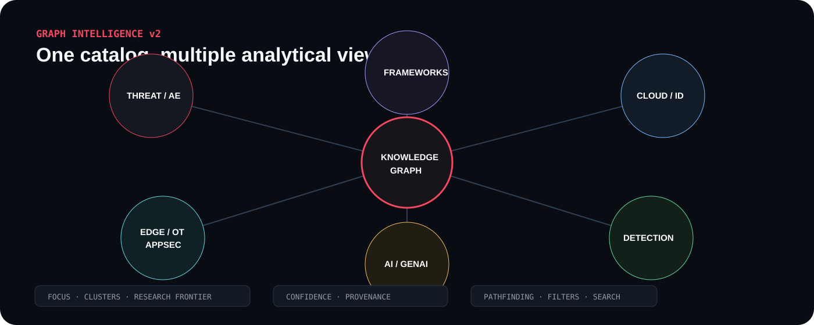

DEFENSIVE COVERAGE
repo dataOPEN · THREAT-INFORMED · EVIDENCE-DRIVEN
OffSec knowledge.
Mapped, measured, verified.
Frameworks, tools, techniques, books, certifications and defensive evidence in one public intelligence graph. Built for practitioners who would rather query context than worship tool lists.
API v4Knowledge Graph 3.0STIX 2.1Neo4jMISPATT&CK NavigatorOpenCTI

STANDARDS INTEL
view timeline →
02
Decision explorer
Query the ecosystem
Build a factual view by kind, domain, verification state and evidence tier. No universal “best tool” scoreboard. Civilization survives another afternoon.
03
Learning intelligence
Choose the objective, then the stack
Each path connects standards, tools, books and certifications. It is a map of relevant material, not a decree from the Certification Industrial Complex.
04
Technique intelligence
Behavior connected to evidence
ATT&CK techniques referenced by RedFrameworks scenarios and scorecards, enriched with defensive context rather than exploitation recipes.
05
Adversary intelligence
Actor context for defensive decisions
Source-attributed profiles connect aliases, motivation, sectors and broad targeting context to defensive priorities. Actor names are overlapping analytic labels, not perfect identities.


Threat-informed validation
Adversary emulation plan library
High-level metadata for authoritative emulation plans. RedFrameworks keeps the defensive purpose and provenance, not command-level procedures.
Research sources
CTI source library
Primary and vendor research sources used to corroborate group naming, lifecycle and targeting context.
06
Graph intelligence
Explore the security ecosystem as relationships
Switch between focused neighborhoods, domain clusters and the NOT VERIFIED research frontier. Every curated edge carries confidence and provenance.
Open full graph ↗
→
Select two entities to trace a relationship path.
FOCUSED NEIGHBORHOODMITRE ATT&CK
07
Research workspace
Verification backlog
NOT VERIFIED entries stay visible, but promotion is evidence-driven. Readiness highlights what is missing before a human review can promote an item.
08
OffSec library
Books & certifications
Curated references and current credential paths with official links, level and domain metadata. No copyrighted text reproduced, because publishers tend to notice that sort of thing.
09
Measurement workspace
Baseline → retest → evidence
Built-in examples plus a local JSON importer. Imported scorecards stay in your browser and are not uploaded anywhere.
EVIDENCE
Maturity
RETEST
Regression watch
DOMAINS
Evidence heatmap
SCENARIOS
Latest comparison
Local scorecard lab
Inspect your own JSON scorecard
Expected shape: {"scores":{"telemetry":80,"detection":70,...}}. Processing happens entirely in-browser.
No local scorecard loaded.
10
Intelligence timeline
What changed?
Standards releases, lifecycle changes and RedFrameworks platform releases in one chronological stream.
11
Full roadmap ↗
Roadmap